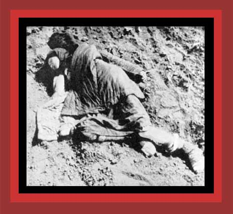

| Stalin imposed a famine on Ukraine that murdered by starvation about 5,000,000 Ukrainians. Here is shown one of the Ukrainian victims. For documentation, see Lethal Politics. Source: "Black Famine In Ukraine 1932-33: A Struggle For Existence" |